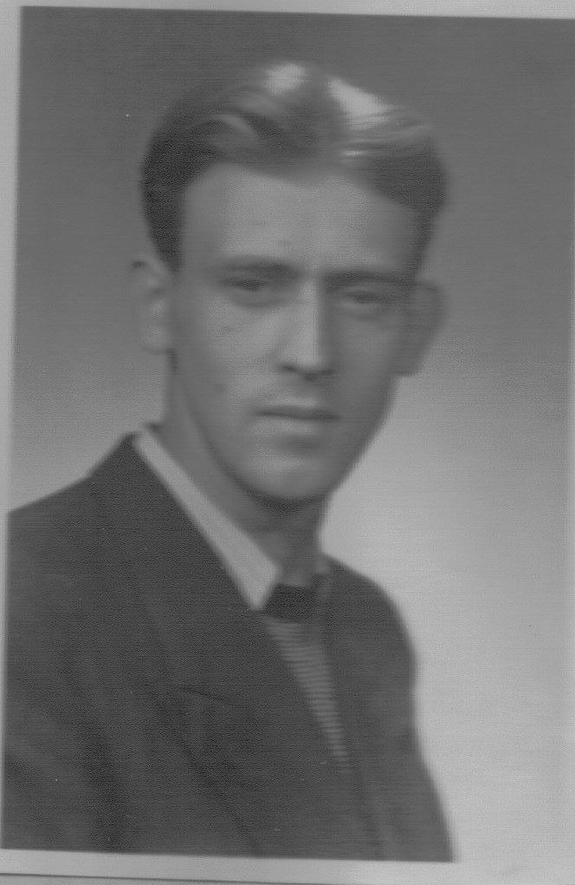

Född 17 okt 1966 i Norrköpings Sankt Johannes (E) 1 .

F Gösta Ingemar Dolk.Född 18 jul 1931 i Uppsala domkyrkoförsamling (C) 2 .
Död 3 maj 2006 på Tunnbindaregatan 41, Gård 10, Kv Norrtull, Nordantill, Norrköping, Norrköpings Matteus (E) 3 .
 FF
Gösta Edvin Dolk.
FF
Gösta Edvin Dolk.
Född 14 okt 1909 i Fristad, Skärkind (E) 4 .
Död 27 nov 1998 på Gnejsvägen 20, Eriksberg, Uppsala, Helga Trefaldighet (C) 3 .
FFF Gustaf Martin Dolk.
Född 10 okt 1884 i Brännebro, Baggetorp, Tjällmo (E) 5 .
Död 16 mar 1970 i Nysätter, Landsjö, Kimstad (E) 3 .
FFM Elin Sofia Dolk f Bergström.
Född 13 jul 1883 i Lättigen, Ekhult (i Björsäter s:n), Örtomta (E) 6 .
Död 28 sep 1932 i Nysätter, Landsjö, Kimstad (E) 7 .
 FM
Karin Elisabet Dolk f Nilsson.
FM
Karin Elisabet Dolk f Nilsson.
Född 26 mar 1908 i Gäddestad, Östra Husby (E) 8 .
Död 24 okt 1992 på Glimmervägen 5 A, Eriksberg, Uppsala, Helga Trefaldighet (C) 3 .
FMF Alarik Nikolaus Nilsson.
Född 18 apr 1878 i Kvarnen, Fastebo, Ringarum (E) 9 .
Död 26 mar 1945 i Johannesberg, Österskam, Östra Ny (E) 3 .
FMM Anna Atalia Nilsson f Karlsson.
Född 26 sep 1876 i Restorpet, Tolsum, Ringarum (E) 10 .
Död 27 feb 1954 i Österskam Östergård, Österskam, Östra Ny (E) 3 .
Född 1 jun 1935 i Lilla Malma (D) 11 .